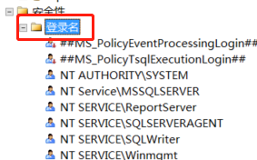
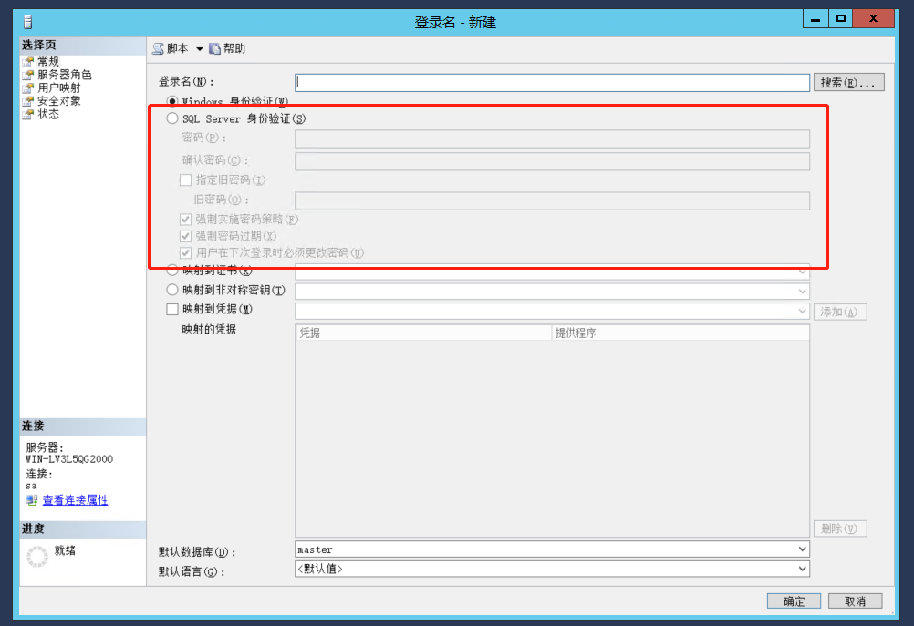
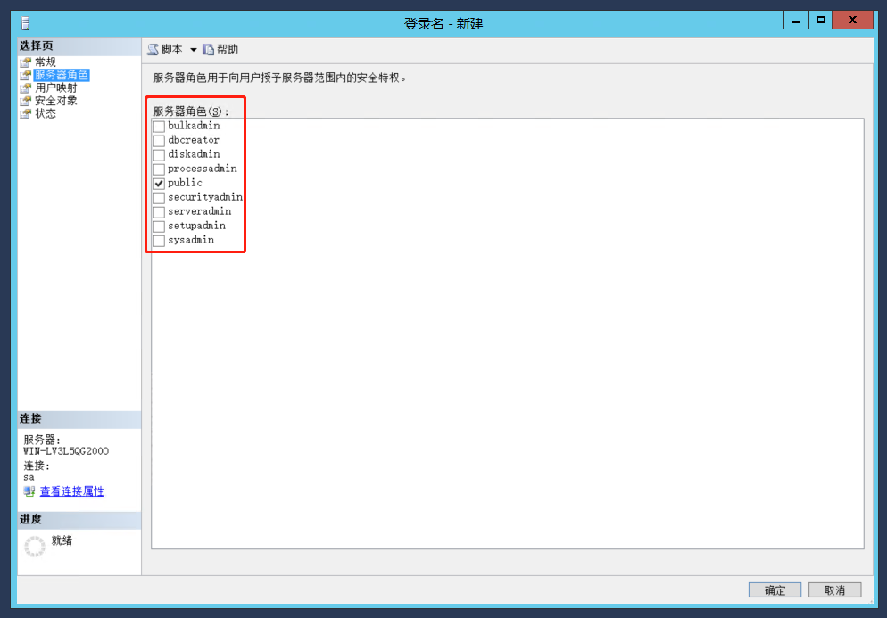
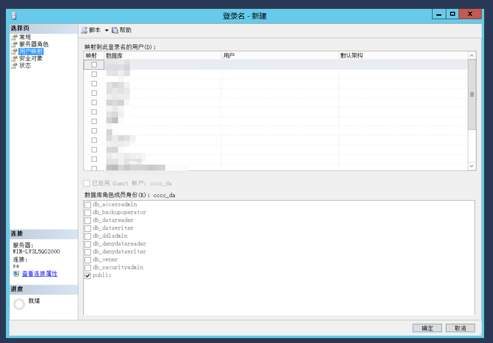
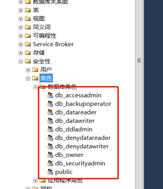
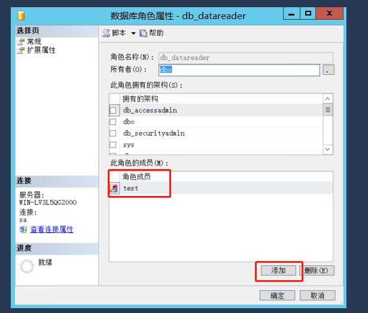
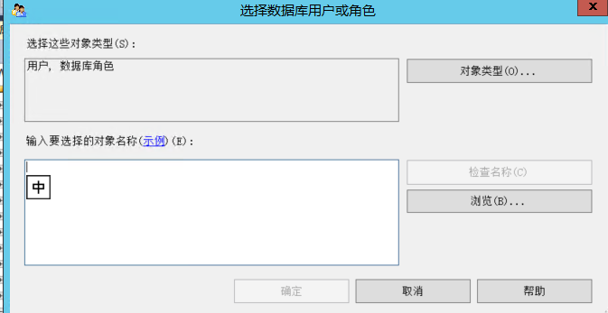

固定服务器
（服务器级别角色）由于固定服务器是在服务器层次上定义的，因此它们位于从属于数据库服务器的数据库外面。下表列出了所有现有的固定 服务器角色
| 固定服务器角色 | 说 明 |
|---|---|
| sysadmin | 执行SQL Server中的任何动作 |
| serveradmin | 配置服务器设置 |
| setupadmin | 安装复制和管理扩展过程 |
| securityadmin | 管理登录和CREATE DATABASE的权限以及阅读审计 |
| processadmin | 管理SQL Server进程 |
| dbcreator | 创建和修改数据库 |
| diskadmin | 管理磁盘文件 |
固定服务器角色及其权限
在某个SQL Server系统中，每个固定服务器角色都有其隐含的权限。使用系统过程sp_srvrolepermission可以浏览每个固定服务器角色的权限。该系统过程的语法形式为：
sp_srvrolepermission[[@srvrolename =] ‘role’]
如果没有指定role的值，那么所有的固定服务器角色的权限都将显示出来。下面的部分将讨论每个固定服务器角色的权限。
1. sysadmin
固定服务器角色sysadmin的成员被赋予了SQL Server系统中所有可能的权限。例如，只有这个角色中的成员(或一个被这个角色中的成员赋予了CREATE DATABASE权限的用户)才能够创建数据库。
固定服务器角色和sa登录之间有着特殊的关系。sa登录一直都是固定服务器角色中的成员，并且不能从该角色中删除。
2. serveradmin
固定服务器角色serveradmin的成员可以执行如下的动作：
向该服务器角色中添加其他登录
运行dbcc pintable命令(从而使表常驻于主内存中)
运行系统过程spconfigure(以显示或更改系统选项)
运行reconfigure选项(以更新系统过程sp_configure所做的所有改动)
使用shutdown命令关掉数据库服务器
运行系统过程sptableoption为用户自定义表设置选项的值
3. setupadmin
固定服务器角色setupadmin中的成员可以执行如下的动作：
向该服务器角色中添加其他登录
添加、删除或配置链接的服务器
执行一些系统过程，如sp_serveroption
4. securityadmin
固定服务器角色securitypadmin中的成员可以执行关于服务器访问和安全的所有动作。这些成员可以进行如下的系统动作：
向该服务器角色中添加其他登录
读取SQL Server的错误日志
运行如下的系统过程：如sp_addlinkedsrvlogin、sp_addlogin、sp_defaultdb、sp_defaultlanguage、sp_denylogin、sp_droplinkedsrvlogin、sp_droplogin、sp_grantlogin、sp_helplogins、sp_remoteoption和sp_revokelogin(所有这些系统过程都与系统安全相关。)
5. processadmin
固定服务器角色processadmin中的成员用来管理SQL Server进程，如中止用户正在运行的查询。这些成员可以进行如下的动作：
向该服务器角色中添加其他登录
执行KILL命令(以取消用户进程)
6. dbcreator
固定服务器角色dbcreator中的成员用来管理与数据库创建和修改有关的所有动作。这些成员可以进行如下的动作：
向该服务器角色中添加其他登录
运行CREATE DATABASE和ALTER DATABASE语句
使用系统过程sp_renamedb来修改数据库的名称
7. diskadmin
固定服务器角色diskadmin的成员可以进行如下与用来存储数据库对象的文件和文件组有关的动作：
向该服务器角色中添加其他登录
运行如下系统过程：sp_ddumpdevice和sp_dropdevice。
运行DISK INIT语句
数据库角色
固定数据库角色在数据库层上进行定义，因此它们存在于属于数据库服务器的每个数据库中。下表列出了所有的固定数据库角色。
| 固定数据库角色 | 说 明 |
|---|---|
| db_owner | 可以执行数据库中技术所有动作的用户 |
| db_accessadmin | 可以添加、删除用户的用户 |
| db_datareader | 可以查看所有数据库中用户表内数据的用户 |
| db_datawriter | 可以添加、修改或删除所有数据库中用户表内数据的用户 |
| db_ddladmin | 可以在数据库中执行所有DDL操作的用户 |
| db_securityadmin | 可以管理数据库中与安全权限有关所有动作的用户 |
| db_backoperator | 可以备份数据库的用户(并可以发布DBCC和CHECKPOINT语句，这两个语句一般在备份前都会被执行) |
| db_denydatareader | 不能看到数据库中任何数据的用户 |
| db_denydatawriter | 不能改变数据库中任何数据的用户 |
除了上表中列出的固定数据库角色之外，还有一种特殊的固定数据库角色，名为public，这里将首先介绍这一角色。
public角色
public角色是一种特殊的固定数据库角色，数据库的每个合法用户都属于该角色。它为数据库中的用户提供了所有默认权限。这样就提供了一种机制，即给予那些没有适当权限的所有用户以一定的(通常是有限的)权限。public角色为数据库中的所有用户都保留了默认的权限，因此是不能被删除的。
一般情况下，public角色允许用户进行如下的操作：
使用某些系统过程查看并显示master数据库中的信息
执行一些不需要一些权限的语句(例如PRINT)
固定数据库角色及其权限
在数据库中，每个固定数据库角色都有其特定的权限。这就意味着对于某个数据库来说，固定数据库角色的成员的权限是有限的。使用系统过程sp_dbfixedrolepermission就可以查看每个固定数据库角色的权限。该系统过程的语法为：
sp_db.xedrolepermission [[@rolename =] ‘role’]
如果没有指定role的值，那么所有固定数据库角色的权限都可以显示出来。下面的几节将讨论每个固定数据库角色的权限。
1. db_owner
固定数据库角色db_owner的成员可以在特定的数据库中进行如下的动作：
向其他固定数据库角色中添加成员，或从其中删除成员
运行所有的DDL语句
运行BACKUP DATABASE和BACKUP LOG语句
使用CHECKPOINT语句显式地启动检查点进程
运行下列dbcc命令：dbcc checkalloc、dbcc checkcatalog、dbcc checkdb、dbcc updateusage
授予、取消或剥夺每一个数据库对象上的下列权限：SELECT、INSERT、UPDATE、DELETE和REFERENCES
使用下列系统过程向数据库中添加用户或角色：sp_addapprole、sp_addrole、sp_addrolemember、sp_approlepassword、sp_changeobjectowner、sp_dropapprole、sp_droprole、sp_droprolemember、sp_dropuser、sp_grantdbaccess
使用系统过程sp_rename为任何数据库对象重新命名
2. db_accessadmin
固定数据库角色db_accessadmin的成员可以执行与数据库访问有关的所有动作。这些角色可以在具体的数据库中执行下列操作：
运行下列系统过程：sp_addalias、sp_dropalias、sp_dropuser、sp_grantdbacess、sp_revokedbaccess
为Windows用户账户、Windows组和SQL Server登录添加或删除访问
3. dbdatareader
固定数据库角色dbdatareader的成员对数据库中的数据库对象(表或视图)具有SELECT权限。然而，这些成员不能把这个权限授予其他任何用户或角色。(这个限制对REVOKE语句来说同样成立。)
4. dbdatawriter
固定数据库角色dbdatawriter的成员对数据库中的数据库对象(表或视图)具有INSERT、UPDATE和DELETE权限。然而，这些成员不能把这个权限授予其他任何用户或角色。(这个限制对REVOKE语句来说也同样成立。)
5. db_ddladmin
固定数据库角色dbddladmin的成员可以进行如下的动作：
运行所有DDL语句
对任何表上授予REFERENCESE权限
使用系统过程sp_procoption和sp_recompile来修改任何存储过程的结构
使用系统过程sp_rename为任何数据库对象重命名
使用系统过程sptableoption和sp_changeobjectowner分别修改表的选项和任何数据库对象的拥有者
6. db_securityadmin
固定数据库角色db_securityadmin的成员可以管理数据库中的安全。这些成员可以进行如下的动作：
运行与安全有关的所有Transact-SQL语句(GRANT、DENY和REVOKE)
运行以下系统过程：sp_addapprole、sp_addrole、sp_addrolemember、sp_approlepassword、sp_changeobjectowner、sp_dropapprole、sp_droprole、sp_droprolemember
7. db_backupoperator
固定数据库角色db_backupoperator的成员可以管理数据库备份的过程。这些成员可以进行如下动作：
运行BACKUP DATABASE和BACKUP LOG语句
用CHECKPOINT语句显式地启动检查点进程
运行如下dbcc命令：dbcc checkalloc、dbcc checkcatalog、dbcc checkdb、dbcc updateusage
8. db_denydatareader和db_denydatawriter
顾名思义，固定数据库角色db_denydatareader的成员对数据库中的数据库对象(表或视图)没有SELECT权限。如果数据库中含有敏感数据并且其他用户不能读取这些数据，那么就可以使用这个角色。
固定数据库角色db_denydatawriter的成员对数据库中的任何数据库对象(表或视图)没有INSERT、UPDATE和DELETE权限。
设置示例
要求：创建一个用户，给用户某个特定数据库所有数据库表的查看权限。
- 创建用户

登录名，右键列表->新建登录名

填写登录名并设置验证方式，建议设置SQLServer验证，并根据实际情况是否需要前置实施密码策略。
到这创建就完成了，此时新建的登录名只可以登录，并没有任何权限。
- 服务器角色

设置服务器角色，默认为public，根据文章说明选择合适的服务器角色，如果这个地方选择了管理员所有权限，那会直接给当前用户最大的管理权限，和我们所想要的不同。
- 用户映射

这个地方设置当前用户可以查看的数据库，我们需要最大程度控制登录名的权限，我们就在此处设置当前登录名可以访问的数据库。
- 数据库角色设置

要给哪个数据库设置权限就打开哪个数据库，根据文章说明，找到要设置的角色名称，右键-> 属性，对数据库角色属性进行设置

点击添加

输入之后要设置的登录名称，然后检查名称是否设置正确，正确后保存即可
到此我们就设置了完成
特别说明一下，在要设定的数据库中->安全性->用户->右键属性，找到安全对象，这个地方可以针对单个表进行权限设置，精确程度会更细化，只不过这样的设置，不能进行批量设置，如果设置对象很多就相当恐怖了。
本博客只是针对开发中要进行的某种设置进行了探究，SQLServer权限设置还有更多粒度的设置。

...
...
Copyright 2021 sunfy.top ALL Rights Reserved